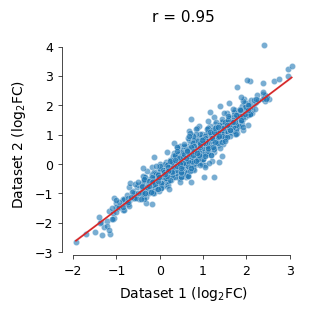
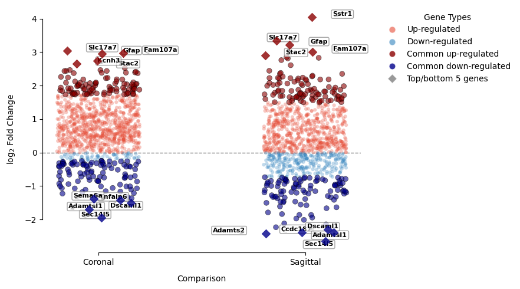

8_coronal_sagittal_cc_in_out_deg_compare
[1]:
import pandas as pd
import matplotlib.pyplot as plt
import seaborn as sns
import matplotlib as mpl
mpl.rcParams['pdf.fonttype'] = 42
mpl.rcParams['ps.fonttype'] = 42
[2]:
zxw1_deg = pd.read_csv('..data/coronal_all_cc_out_vs_in_gene.csv')
zxw1_deg
[2]:
| Unnamed: 0 | names | scores | logfoldchanges | pvals | pvals_adj | log_pval | comparison | |
|---|---|---|---|---|---|---|---|---|
| 0 | 0 | Gfap | 119.552864 | 2.961014 | 0.0 | 0.0 | inf | cc-out_vs_cc_in |
| 1 | 1 | Fam107a | 101.277850 | 2.966981 | 0.0 | 0.0 | inf | cc-out_vs_cc_in |
| 2 | 2 | Acsbg1 | 78.532550 | 2.523039 | 0.0 | 0.0 | inf | cc-out_vs_cc_in |
| 3 | 3 | Slc17a7 | 74.491930 | 3.045114 | 0.0 | 0.0 | inf | cc-out_vs_cc_in |
| 4 | 4 | Id4 | 73.924090 | 2.437699 | 0.0 | 0.0 | inf | cc-out_vs_cc_in |
| ... | ... | ... | ... | ... | ... | ... | ... | ... |
| 1106 | 1106 | Grm3 | -59.469433 | -1.069267 | 0.0 | 0.0 | inf | cc-out_vs_cc_in |
| 1107 | 1107 | Gprc5b | -61.270737 | -0.411187 | 0.0 | 0.0 | inf | cc-out_vs_cc_in |
| 1108 | 1108 | Mog | -64.613570 | -0.375698 | 0.0 | 0.0 | inf | cc-out_vs_cc_in |
| 1109 | 1109 | Sec14l5 | -80.332520 | -1.933895 | 0.0 | 0.0 | inf | cc-out_vs_cc_in |
| 1110 | 1110 | Cldn11 | -81.602516 | 0.002031 | 0.0 | 0.0 | inf | cc-out_vs_cc_in |
1111 rows × 8 columns
[3]:
zxw3_deg = pd.read_csv('../data/sagittal_all_cc_out_vs_in_gene.csv')
zxw3_deg
[3]:
| Unnamed: 0 | names | scores | logfoldchanges | pvals | pvals_adj | log_pval | |
|---|---|---|---|---|---|---|---|
| 0 | 0 | Gfap | 86.087240 | 3.226564 | 0.0 | 0.0 | inf |
| 1 | 1 | Sstr1 | 66.189080 | 4.045555 | 0.0 | 0.0 | inf |
| 2 | 2 | Fam107a | 63.092552 | 3.008477 | 0.0 | 0.0 | inf |
| 3 | 3 | Slc17a7 | 54.659230 | 3.349460 | 0.0 | 0.0 | inf |
| 4 | 4 | Acsbg1 | 43.139275 | 2.211851 | 0.0 | 0.0 | inf |
| ... | ... | ... | ... | ... | ... | ... | ... |
| 1106 | 1106 | Grm3 | -42.883160 | -1.661856 | 0.0 | 0.0 | inf |
| 1107 | 1107 | Dscaml1 | -45.509216 | -2.303302 | 0.0 | 0.0 | inf |
| 1108 | 1108 | Cldn11 | -49.790493 | -0.007955 | 0.0 | 0.0 | inf |
| 1109 | 1109 | Sema6a | -50.425950 | -2.009346 | 0.0 | 0.0 | inf |
| 1110 | 1110 | Sec14l5 | -62.888046 | -2.653704 | 0.0 | 0.0 | inf |
1111 rows × 7 columns
[42]:
# 设置参数
plt.rcParams.update({
# 'font.family': 'sans-serif',
# 'font.sans-serif': ['Arial'],
'font.size': 9,
'axes.titlesize': 11,
'axes.labelsize': 10,
'xtick.labelsize': 9,
'ytick.labelsize': 9,
'axes.facecolor': 'white',
'figure.facecolor': 'white',
'savefig.dpi': 300
})
# 使用相同的数据准备流程
common_genes = zxw1_deg['names'].tolist()
df1_aligned = zxw1_deg[zxw1_deg['names'].isin(common_genes)].set_index('names').sort_index()
df2_aligned = zxw3_deg[zxw3_deg['names'].isin(common_genes)].set_index('names').sort_index()
correlation = df1_aligned['logfoldchanges'].corr(df2_aligned['logfoldchanges'])
merged_df = pd.DataFrame({
'Expression_1': df1_aligned['logfoldchanges'],
'Expression_2': df2_aligned['logfoldchanges']
})
# 创建图形
plt.figure(figsize=(3.3, 3.3))
ax = plt.gca()
# 绘制散点图（使用更学术的颜色和透明度）
scatter = sns.regplot(
x='Expression_1',
y='Expression_2',
data=merged_df,
scatter_kws={
's': 20,
'color': '#1f77b4', # 更柔和的蓝色
'alpha': 0.6,
'edgecolor': 'w',
'linewidth': 0.3
},
line_kws={
'color': '#d62728', # 更醒目的红色
'linewidth': 1.2
},
ci=95 # 显示95%置信区间
)
# 设置坐标轴风格
ax.spines['bottom'].set_color('black')
ax.spines['left'].set_color('black')
ax.spines['bottom'].set_linewidth(0.5)
ax.spines['left'].set_linewidth(0.5)
sns.despine(trim=True, offset=2) # 移除上、右边框
# 设置标签和标题
plt.title(f'r = {correlation:.2f}', pad=10, fontweight='medium')
plt.xlabel('Dataset 1 (log$_2$FC)', labelpad=5)
plt.ylabel('Dataset 2 (log$_2$FC)', labelpad=5)
# 调整刻度线
ax.tick_params(width=0.5, length=3, which='both')
# 添加半透明网格（可选）
# ax.grid(True, linestyle='--', alpha=0.3, linewidth=0.5)
# 紧凑布局
plt.tight_layout(pad=1.5)
# plt.show()
# plt.savefig('/mnt/Data16Tc/home/haichao/code/sainsc-study-main/cluster_result/paper_fig2/cc_in_out_deg_compare.pdf', bbox_inches='tight', format='pdf')
findfont: Generic family 'sans-serif' not found because none of the following families were found: Arial
findfont: Generic family 'sans-serif' not found because none of the following families were found: Arial
findfont: Generic family 'sans-serif' not found because none of the following families were found: Arial
findfont: Generic family 'sans-serif' not found because none of the following families were found: Arial
findfont: Generic family 'sans-serif' not found because none of the following families were found: Arial
findfont: Generic family 'sans-serif' not found because none of the following families were found: Arial
findfont: Generic family 'sans-serif' not found because none of the following families were found: Arial
findfont: Generic family 'sans-serif' not found because none of the following families were found: Arial
findfont: Generic family 'sans-serif' not found because none of the following families were found: Arial
findfont: Generic family 'sans-serif' not found because none of the following families were found: Arial
findfont: Generic family 'sans-serif' not found because none of the following families were found: Arial
findfont: Generic family 'sans-serif' not found because none of the following families were found: Arial
findfont: Generic family 'sans-serif' not found because none of the following families were found: Arial
findfont: Generic family 'sans-serif' not found because none of the following families were found: Arial
findfont: Generic family 'sans-serif' not found because none of the following families were found: Arial
findfont: Generic family 'sans-serif' not found because none of the following families were found: Arial
findfont: Generic family 'sans-serif' not found because none of the following families were found: Arial
findfont: Generic family 'sans-serif' not found because none of the following families were found: Arial
findfont: Generic family 'sans-serif' not found because none of the following families were found: Arial
findfont: Generic family 'sans-serif' not found because none of the following families were found: Arial
findfont: Generic family 'sans-serif' not found because none of the following families were found: Arial
findfont: Generic family 'sans-serif' not found because none of the following families were found: Arial
findfont: Generic family 'sans-serif' not found because none of the following families were found: Arial
findfont: Generic family 'sans-serif' not found because none of the following families were found: Arial
findfont: Generic family 'sans-serif' not found because none of the following families were found: Arial
findfont: Generic family 'sans-serif' not found because none of the following families were found: Arial
findfont: Generic family 'sans-serif' not found because none of the following families were found: Arial
findfont: Generic family 'sans-serif' not found because none of the following families were found: Arial
findfont: Generic family 'sans-serif' not found because none of the following families were found: Arial
findfont: Generic family 'sans-serif' not found because none of the following families were found: Arial
findfont: Generic family 'sans-serif' not found because none of the following families were found: Arial
findfont: Generic family 'sans-serif' not found because none of the following families were found: Arial
findfont: Generic family 'sans-serif' not found because none of the following families were found: Arial
findfont: Generic family 'sans-serif' not found because none of the following families were found: Arial
findfont: Generic family 'sans-serif' not found because none of the following families were found: Arial
findfont: Generic family 'sans-serif' not found because none of the following families were found: Arial
findfont: Generic family 'sans-serif' not found because none of the following families were found: Arial
findfont: Generic family 'sans-serif' not found because none of the following families were found: Arial
findfont: Generic family 'sans-serif' not found because none of the following families were found: Arial
findfont: Generic family 'sans-serif' not found because none of the following families were found: Arial
findfont: Generic family 'sans-serif' not found because none of the following families were found: Arial
findfont: Generic family 'sans-serif' not found because none of the following families were found: Arial
findfont: Generic family 'sans-serif' not found because none of the following families were found: Arial
findfont: Generic family 'sans-serif' not found because none of the following families were found: Arial
findfont: Generic family 'sans-serif' not found because none of the following families were found: Arial
findfont: Generic family 'sans-serif' not found because none of the following families were found: Arial
findfont: Generic family 'sans-serif' not found because none of the following families were found: Arial
findfont: Generic family 'sans-serif' not found because none of the following families were found: Arial
findfont: Generic family 'sans-serif' not found because none of the following families were found: Arial
findfont: Generic family 'sans-serif' not found because none of the following families were found: Arial
findfont: Generic family 'sans-serif' not found because none of the following families were found: Arial
findfont: Generic family 'sans-serif' not found because none of the following families were found: Arial
findfont: Generic family 'sans-serif' not found because none of the following families were found: Arial
findfont: Generic family 'sans-serif' not found because none of the following families were found: Arial
findfont: Generic family 'sans-serif' not found because none of the following families were found: Arial
findfont: Generic family 'sans-serif' not found because none of the following families were found: Arial
findfont: Generic family 'sans-serif' not found because none of the following families were found: Arial
findfont: Generic family 'sans-serif' not found because none of the following families were found: Arial
findfont: Generic family 'sans-serif' not found because none of the following families were found: Arial
findfont: Generic family 'sans-serif' not found because none of the following families were found: Arial
findfont: Generic family 'sans-serif' not found because none of the following families were found: Arial
findfont: Generic family 'sans-serif' not found because none of the following families were found: Arial
findfont: Generic family 'sans-serif' not found because none of the following families were found: Arial
findfont: Generic family 'sans-serif' not found because none of the following families were found: Arial
findfont: Generic family 'sans-serif' not found because none of the following families were found: Arial
findfont: Generic family 'sans-serif' not found because none of the following families were found: Arial
findfont: Generic family 'sans-serif' not found because none of the following families were found: Arial
findfont: Generic family 'sans-serif' not found because none of the following families were found: Arial
findfont: Generic family 'sans-serif' not found because none of the following families were found: Arial
findfont: Generic family 'sans-serif' not found because none of the following families were found: Arial
findfont: Generic family 'sans-serif' not found because none of the following families were found: Arial
findfont: Generic family 'sans-serif' not found because none of the following families were found: Arial
findfont: Generic family 'sans-serif' not found because none of the following families were found: Arial
findfont: Generic family 'sans-serif' not found because none of the following families were found: Arial
findfont: Generic family 'sans-serif' not found because none of the following families were found: Arial
findfont: Generic family 'sans-serif' not found because none of the following families were found: Arial
findfont: Generic family 'sans-serif' not found because none of the following families were found: Arial
findfont: Generic family 'sans-serif' not found because none of the following families were found: Arial
findfont: Generic family 'sans-serif' not found because none of the following families were found: Arial
findfont: Generic family 'sans-serif' not found because none of the following families were found: Arial
findfont: Generic family 'sans-serif' not found because none of the following families were found: Arial
findfont: Generic family 'sans-serif' not found because none of the following families were found: Arial
findfont: Generic family 'sans-serif' not found because none of the following families were found: Arial
findfont: Generic family 'sans-serif' not found because none of the following families were found: Arial
findfont: Generic family 'sans-serif' not found because none of the following families were found: Arial
findfont: Generic family 'sans-serif' not found because none of the following families were found: Arial
findfont: Generic family 'sans-serif' not found because none of the following families were found: Arial
findfont: Generic family 'sans-serif' not found because none of the following families were found: Arial
findfont: Generic family 'sans-serif' not found because none of the following families were found: Arial
findfont: Generic family 'sans-serif' not found because none of the following families were found: Arial
findfont: Generic family 'sans-serif' not found because none of the following families were found: Arial
findfont: Generic family 'sans-serif' not found because none of the following families were found: Arial
findfont: Generic family 'sans-serif' not found because none of the following families were found: Arial

[4]:
zxw1_deg_top100 = zxw1_deg.nlargest(100, 'logfoldchanges')
zxw3_deg_top100 = zxw3_deg.nlargest(100, 'logfoldchanges')
zxw1_deg_top100
[4]:
| Unnamed: 0 | names | scores | logfoldchanges | pvals | pvals_adj | log_pval | comparison | |
|---|---|---|---|---|---|---|---|---|
| 3 | 3 | Slc17a7 | 74.491930 | 3.045114 | 0.000000e+00 | 0.000000e+00 | inf | cc-out_vs_cc_in |
| 1 | 1 | Fam107a | 101.277850 | 2.966981 | 0.000000e+00 | 0.000000e+00 | inf | cc-out_vs_cc_in |
| 0 | 0 | Gfap | 119.552864 | 2.961014 | 0.000000e+00 | 0.000000e+00 | inf | cc-out_vs_cc_in |
| 24 | 24 | Stac2 | 43.515114 | 2.741199 | 0.000000e+00 | 0.000000e+00 | inf | cc-out_vs_cc_in |
| 57 | 57 | Kcnh3 | 28.302246 | 2.647537 | 3.242797e-176 | 4.740457e-175 | 175.489080 | cc-out_vs_cc_in |
| ... | ... | ... | ... | ... | ... | ... | ... | ... |
| 145 | 145 | Syndig1 | 12.873200 | 1.738300 | 6.370649e-38 | 3.867645e-37 | 37.195816 | cc-out_vs_cc_in |
| 398 | 398 | Fibcd1 | 3.639619 | 1.737264 | 2.730421e-04 | 6.594559e-04 | 3.563770 | cc-out_vs_cc_in |
| 371 | 371 | Acvr1c | 4.170446 | 1.735889 | 3.040033e-05 | 7.872906e-05 | 4.517122 | cc-out_vs_cc_in |
| 135 | 135 | Calb1 | 14.095745 | 1.733454 | 4.033682e-45 | 2.605477e-44 | 44.394298 | cc-out_vs_cc_in |
| 46 | 46 | Coro1a | 31.388968 | 1.731327 | 2.861894e-216 | 5.046928e-215 | 215.543346 | cc-out_vs_cc_in |
100 rows × 8 columns
[5]:
zxw1_deg_small100 = zxw1_deg.nsmallest(100, 'logfoldchanges')
zxw3_deg_small100 = zxw3_deg.nsmallest(100, 'logfoldchanges')
zxw1_deg_small100
[5]:
| Unnamed: 0 | names | scores | logfoldchanges | pvals | pvals_adj | log_pval | comparison | |
|---|---|---|---|---|---|---|---|---|
| 1109 | 1109 | Sec14l5 | -80.332520 | -1.933895 | 0.000000 | 0.000000 | inf | cc-out_vs_cc_in |
| 1100 | 1100 | Adamtsl1 | -38.866173 | -1.699647 | 0.000000 | 0.000000 | inf | cc-out_vs_cc_in |
| 1103 | 1103 | Dscaml1 | -50.880287 | -1.499207 | 0.000000 | 0.000000 | inf | cc-out_vs_cc_in |
| 1101 | 1101 | Tnfaip6 | -46.938343 | -1.410299 | 0.000000 | 0.000000 | inf | cc-out_vs_cc_in |
| 1105 | 1105 | Sema6a | -58.445510 | -1.381543 | 0.000000 | 0.000000 | inf | cc-out_vs_cc_in |
| ... | ... | ... | ... | ... | ... | ... | ... | ... |
| 989 | 989 | Kcnh8 | -0.429622 | -0.261252 | 0.667471 | 0.747636 | 0.175568 | cc-out_vs_cc_in |
| 985 | 985 | Ptprc | -0.355616 | -0.259794 | 0.722128 | 0.786554 | 0.141386 | cc-out_vs_cc_in |
| 1014 | 1014 | Lama3 | -1.007572 | -0.249090 | 0.313660 | 0.436978 | 0.503541 | cc-out_vs_cc_in |
| 1017 | 1017 | Gpr4 | -1.041164 | -0.246525 | 0.297799 | 0.422803 | 0.526076 | cc-out_vs_cc_in |
| 1016 | 1016 | Fat4 | -1.024630 | -0.246279 | 0.305538 | 0.429965 | 0.514935 | cc-out_vs_cc_in |
100 rows × 8 columns
[22]:
len(set(zxw3_deg_small100['names'].tolist()) & set(zxw1_deg_small100['names'].tolist()))
[22]:
83
[23]:
len(set(zxw3_deg_top100['names'].tolist()) & set(zxw1_deg_top100['names'].tolist()))
[23]:
78
[21]:
import pandas as pd
import matplotlib.pyplot as plt
import seaborn as sns
import numpy as np
from adjustText import adjust_text
# 数据准备
zxw1_deg['comparison'] = 'coronal'
zxw3_deg['comparison'] = 'sagittal'
df = pd.concat([zxw1_deg, zxw3_deg])
df['regulation'] = df['logfoldchanges'].apply(lambda x: 'Up' if x > 0 else 'Down')
# 针对coronal数据（zxw1_deg）挑选logfoldchanges最大的100个和最小的100个基因
coronal_top = zxw1_deg.nlargest(100, 'logfoldchanges')['names']
coronal_bottom = zxw1_deg.nsmallest(100, 'logfoldchanges')['names']
coronal_highlight = set(coronal_top).union(set(coronal_bottom))
# 针对sagittal数据（zxw3_deg）挑选logfoldchanges最大的100个和最小的100个基因
sagittal_top = zxw3_deg.nlargest(100, 'logfoldchanges')['names']
sagittal_bottom = zxw3_deg.nsmallest(100, 'logfoldchanges')['names']
sagittal_highlight = set(sagittal_top).union(set(sagittal_bottom))
# 根据comparison分别设置highlight列
def highlight_flag(row):
if row['comparison'] == 'coronal':
return row['names'] in coronal_highlight
else:
return row['names'] in sagittal_highlight
df['highlight'] = df.apply(highlight_flag, axis=1)
# 使用具有唯一索引的数据框
df = df.reset_index(drop=True)
# 指定标注的基因 - 为每组分别标记top和bottom 5个基因
# 为coronal数据标记
coronal_data = df[df['comparison'] == 'coronal'].copy()
coronal_top_indices = coronal_data.nlargest(5, 'logfoldchanges').index
coronal_bottom_indices = coronal_data.nsmallest(5, 'logfoldchanges').index
# 为sagittal数据标记
sagittal_data = df[df['comparison'] == 'sagittal'].copy()
sagittal_top_indices = sagittal_data.nlargest(5, 'logfoldchanges').index
sagittal_bottom_indices = sagittal_data.nsmallest(5, 'logfoldchanges').index
# 初始化标记列
df['to_label'] = False
df.loc[coronal_top_indices, 'to_label'] = True
df.loc[coronal_bottom_indices, 'to_label'] = True
df.loc[sagittal_top_indices, 'to_label'] = True
df.loc[sagittal_bottom_indices, 'to_label'] = True
# 验证每组标记的基因数
coronal_labeled = df[df['to_label'] & (df['comparison'] == 'coronal')]
sagittal_labeled = df[df['to_label'] & (df['comparison'] == 'sagittal')]
# 将图改为左右排列：coronal在左，sagittal在右，x轴为组别，y轴为logfoldchanges
df['jitter_x'] = df['comparison'].map({'coronal': 0, 'sagittal': 1})
np.random.seed(39)
df['jitter_x'] = df['jitter_x'] + np.random.uniform(-0.2, 0.2, len(df))
df_label = df[df['to_label']].copy()
df_nonlabel = df[~df['to_label']].copy()
# 绘图
plt.figure(figsize=(9, 5))
# 绘制非标注基因点（普通圆点，颜色根据regulation，且不在highlight内）
ax = sns.scatterplot(
x='jitter_x',
y='logfoldchanges',
hue='regulation',
data=df_nonlabel[~df_nonlabel['highlight']],
palette={'Up': '#E64B35', 'Down': '#3182BD'},
s=20,
alpha=0.3,
edgecolor='none',
marker='o'
)
# 绘制高亮基因点（使用更深的颜色），只对非标注数据
sns.scatterplot(
x='jitter_x',
y='logfoldchanges',
hue='regulation',
data=df_nonlabel[df_nonlabel['highlight']],
palette={'Up': '#8B0000', 'Down': '#00008B'},
s=40,
alpha=0.6,
marker='o',
edgecolor='black',
linewidth=0.5,
ax=ax,
legend=False
)
# 绘制需要标注的点（使用菱形标记）
for idx, row in df_label.iterrows():
is_up = row['logfoldchanges'] > 0
is_highlight = row['highlight']
# 根据是否高亮确定颜色
color = '#8B0000' if is_up and is_highlight else '#00008B' if (not is_up and is_highlight) else '#E64B35' if is_up else '#3182BD'
marker = 'D'
size = 55
ax.scatter(
row['jitter_x'],
row['logfoldchanges'],
s=size,
color=color,
marker=marker,
alpha=0.8,
linewidth=0.5,
zorder=10
)
# 添加文本标注
texts = []
for idx, row in df_label.iterrows():
gene_name = row['names']
offset_x = 0.1 if row['logfoldchanges'] > 0 else -0.1
ha = 'left' if row['logfoldchanges'] > 0 else 'right'
text = ax.text(
row['jitter_x'] + offset_x,
row['logfoldchanges'],
gene_name,
fontsize=8,
color='black',
fontweight='bold',
ha=ha,
va='center',
bbox=dict(boxstyle='round,pad=0.2', facecolor='white', edgecolor='gray', alpha=0.7)
)
texts.append(text)
# 使用adjustText避免文本重叠
adjust_text(
texts,
arrowprops=dict(arrowstyle='->', color='gray', lw=0.5, alpha=0.7),
expand_points=(0.5, 0.5),
expand_text=(0.5, 0.5),
force_text=(0.4, 1.3)
)
# 辅助线：y轴=0的水平线
ax.axhline(0, color='black', linestyle='--', linewidth=1, alpha=0.5, zorder=0)
# 坐标轴优化
ax.set_xticks([0, 1])
ax.set_xticklabels(['Coronal', 'Sagittal'])
ax.set_xlabel('Comparison', labelpad=10)
ax.set_ylabel('log$_2$ Fold Change', labelpad=10)
sns.despine(trim=True)
# 图例定制
legend_elements = [
plt.Line2D([0], [0], marker='o', color='w', label='Up-regulated',
markerfacecolor='#E64B35', markersize=8, alpha=0.6),
plt.Line2D([0], [0], marker='o', color='w', label='Down-regulated',
markerfacecolor='#3182BD', markersize=8, alpha=0.6),
plt.Line2D([0], [0], marker='o', color='w', label='Common up-regulated',
markerfacecolor='#8B0000', markersize=8, alpha=0.8),
plt.Line2D([0], [0], marker='o', color='w', label='Common down-regulated',
markerfacecolor='#00008B', markersize=8, alpha=0.8),
plt.Line2D([0], [0], marker='D', color='w', label='Top/bottom 5 genes',
markerfacecolor='gray', markersize=8, alpha=0.8)
]
ax.legend(handles=legend_elements,
bbox_to_anchor=(1.05, 1),
frameon=False,
title='Gene Types')
# 自动调整布局
plt.tight_layout()
# plt.show()
# plt.savefig('/mnt/Data16Tc/home/haichao/code/sainsc-study-main/cluster_result/paper_fig2/cc_in_out_deg.pdf', bbox_inches='tight', format='pdf')
